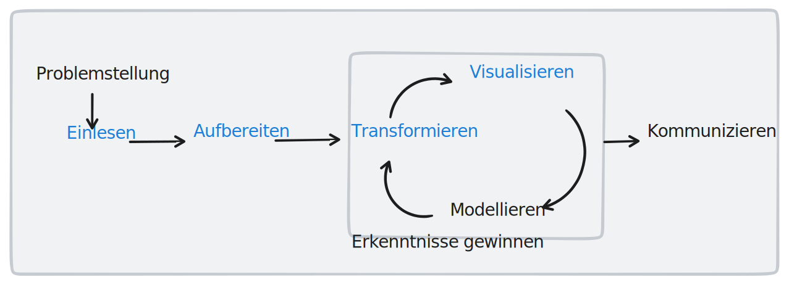

DESKRIPTIVE ANALYSE
[TODO:
- deskriptive Analyse abgrenzen von deskriptiver Statistik
- deskriptive Analyse als Voraussetzung für weitere Analysemethoden
- Datensatz vorstellen
]
Die deskriptive Analyse ist eine wichtige Komponente der Datenanalyse, die einen Einblick in die Eigenschaften und Merkmale eines bestimmten Datensatzes ermöglicht. Sie ist gleichzeitig auch die Grundlage für viele weitere Analysemethoden. Davon ausgehend, dass Sie bereits durch ihre statistische Vorausbildung mit den grundlegenden Konzepten der deskriptiven Statistik vertraut sind, werden wir uns in diesem Kapitel auf die Anwendung dieser Konzepte auf die Datenanalyse konzentrieren. Wir werden sehen, dass es bei der deskriptiven Analyse im Grunde nur um die Zusammenfassung, Organisation und Darstellung von Daten geht. Auch werden wir feststellen, dass diese Form der Analyse methodisch oft einfach oder trivial erscheint, jedoch in der Praxis oft bereits entscheidende Erkenntnisse über die Daten liefern kann.
In diesem Kapitel werden wir uns mit den ersten vier Schritten des Analyseprozesses beschäftigen. Diese sind in unser bekannten Darstellung blau hervorgehoben.

Bevor wir mit dem ersten Schritt - dem Einlesen der Daten - beginnen, werden wir uns kurz mit dem Datensatz beschäftigen, mit dem wir in diesem Kapitel arbeiten werden.
Einlesen der Daten
Im ersten Schritt müssen wir den Datensatz einlesen. Dieser ist im CSV-Format vorliegend und kann mit der Funktion read_csv von Pandas eingelesen werden.
Wir werden für dieses Kapitel im Wesentlicheh mit einem Datensatz
Was ist “Deskriptive Analyse”?
Warum setzen wir diese ein?
Verteilungsmaße, Aggregationen, Gruppierungen, Filterung
Visualisierung von Daten
(Beispiel Edward Tufte - The Visual Display of Quantitative Information)